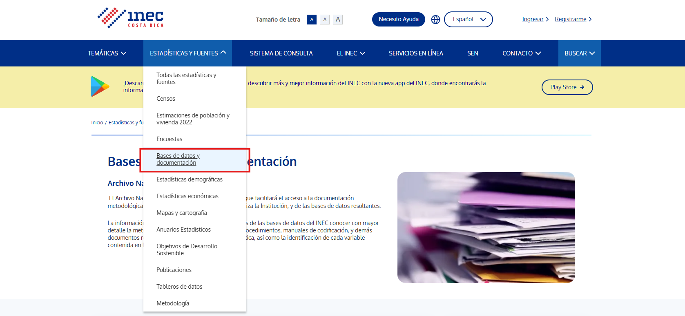
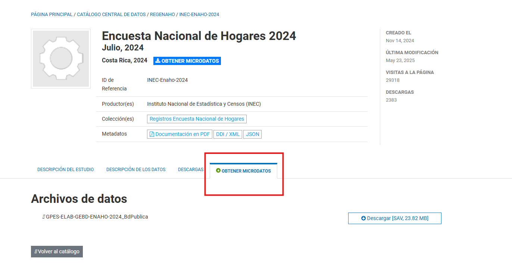

Semana 8
Acceder Datos del INEC
En los laboratorios anteriores se han usado diferentes bases de datos, que en su mayoría pertenecen a las bases de datos que publica el INEC.
INEC
El INEC es el Instituto Nacional de Estadística y Censos, y son quienes realizan las encuestas que se usan para analizar la situación socioeconómica del país, como por ejemplo el desempleo, la informalidad, la pobreza, entre otros.
Para descargar los microdatos que se obtienen en las encuestas podemos dirigrnos a la página https://inec.cr/

Seleccionamos "Estadísticas y Fuentes" y luego "Bases de datos y documentación"
Aquí se encuentran diferentes las diferentes encuestas nacionales, por ejemplo la Encuesta Nacional de Hogares, la Encuesta Continua de Empleo y muchas más.
En nuestro caso vamos a descargar la Encuesta Nacional de Hogares de 2024

Seleccionamos la opción obtener microdatos y descargamos la base de datos.
Análisis
Una vez descargamos la base de datos podemos empezar el análisis
Cargar la base de datos
Note que el formato del archivo es .sav, por lo que para cargar la base de datos usamos import spss
Tip
Puede notar que la base de datos es grande y algunas variables tienen nombres complicados.
Es fácil renombrar todas las variables en minúsculas o mayúsculas para evitar errores provocados por escribir mal algún nombre
Empezamos renombrando todas las variables a minúsculas
*Con el * le decimos a STATA que renombre todas las variables
*Con lower STATA entiende que debe dejar el mismo nombre pero en minúscula
*entiende
rename *, lower
En este laboratorio haremos un análisis separando a la población por grupos, por ejemplo, separando por ciudadanos nacionales y extranjeros.
Para esto usamos la variable lugnac, que indica el lugar de nacimiento de la persona.
Usando codebook podemos obtener un resumen de como funciona la variable
Resultado
En este caso vemos que la variable toma 5 valores posibles, sin embargo, ya que solo nos interesa saber si la persona es nacional o extranjera, entonces podemos crear un indicador
recode lugnac (0/1=1) (2/4=0), gen(nacional)
*Creamos y aplicamos la etiqueta
label define nacional_lbl 0 "Extranjero" 1 "Nacional", replace
label values nacional nacional_lbl
*Tabulamos la variable
tab nacional
Queremos ver los años de experiencia de las personas, para esto le restamos los años de educación y los 6 años antes de primer grado a la edad de la persona
Resultado
Note que el valor mínimo es de -95, pero eso significa que hay personas con ~90 años de escolaridad, lo cual no es posible
scc install
Instalar paquetes
A veces la comunidad elabora comandos que no se encuentran en la versión oficial de STATA
Estos paquetes se pueden instalar usando ssc install [paquete]
Para nuestro caso es útil ver los valores únicos y las etiquetas, codebook solo muestra algunos valores, pero si queremos verlos todos debemos usar otro comando llamado fre
Primero instalamos el paquete y luego podemos usarlo como cualquier otro comando
*Instalarlo / Solo se tiene que hacer una vez
ssc install fre
*Luego se usa indicandole qué variable tabular
fre escolari
Resultado
escolari -- Años de escolaridad
------------------------------------------------------------------------------------------------
| Freq. Percent Valid Cum.
---------------------------------------------------+--------------------------------------------
Valid 0 Sin escolaridad, preescolar o enseñanza | 2971 9.63 9.63 9.63
especial |
1 Un año | 814 2.64 2.64 12.27
2 Dos años | 814 2.64 2.64 14.91
3 Tres años | 1121 3.63 3.63 18.54
4 Cuatro años | 776 2.52 2.52 21.06
5 Cinco años | 1047 3.39 3.39 24.45
6 Seis años | 6405 20.76 20.76 45.22
7 Siete años | 1138 3.69 3.69 48.91
8 Ocho años | 1399 4.54 4.54 53.44
9 Nueve años | 2070 6.71 6.71 60.15
10 Diez años | 960 3.11 3.11 63.27
11 Once años | 5185 16.81 16.81 80.08
12 Doce años | 948 3.07 3.07 83.15
13 Trece años | 579 1.88 1.88 85.03
14 Catorce años | 1029 3.34 3.34 88.36
15 Quince años | 1138 3.69 3.69 92.05
16 Dieciseis años | 984 3.19 3.19 95.24
17 Diecisiete años | 1300 4.21 4.21 99.46
18 Dieciocho años | 21 0.07 0.07 99.52
20 Veinte años | 17 0.06 0.06 99.58
21 Veintiuno años | 2 0.01 0.01 99.59
22 Veintidós años | 59 0.19 0.19 99.78
99 Ignorado | 69 0.22 0.22 100.00
Total | 30846 100.00 100.00
------------------------------------------------------------------------------------------------
Note que no se debería tomar en cuenta el 99, ya que representa datos ignorados
*Eliminamos la variable
drop experiencia
*Generamos la variable de nuevo
gen experiencia = a5 - escolari - 6 if escolari!=99 & a5>6
*También excluimos a las personas menores de 6 años
egen
A veces es útil también guardar las estadísticas que generamos como variables
La mayoría de los comandos que generan estadísticas no son compatibles con gen
egen
egen permite crear nuevas variables que contienen algún estadístico calculado, por ejemplo
- promedio
- varianza
- curtosis
group
Siguiendo con el análisis por grupos, a veces es interesante comparar más que solo 2 categorías, por ejemplo, además de personas migrantes y nacionales, comparar migrantes mujeres y nacionales mujeres
group nos permite hacer una variable que agrupa según las variables que le indicamos
*Agrupar por nacionalidad y sexo
egen nac_sexo = group(nacional a4)
label define nac_sexo_lbl 1 "H_ext" 2 "M_ext" 3 "H_nac" 4 "M_nac", replace
label values nac_sexo
bysort
bysort es útil para hacer operaciones entre grupos. La diferencia es que cuando usamos bysort, en lugar de aplicar la operación a toda la base de datos, va a dividir la base por grupo y luego va a ejecutar el comando que queremos.
*Tabular la rama de ocupación de mujeres costarricenses y extranjeras
bysort nac_sexo: tab ramaemppri if inlist(nac_sexo, 2,4), sort
También es posible crear variables
*Crear una variable que indique el total de personas en cada grupo
*_N indica el total de cada grupo
bysort nac_sexo: gen total_personas = _N
table
table es muy similar a tab, pero este nos permite hacer tablas que combinen estadísticos de diferentes variables.
Su syntaxis es la siguiente
Por ejemplo, si nos interesa ver el salario promedio, la desviación estándar, los años de experiencia promedio y los años de educación promedio, según la nacionalidad y el sexo de la persona podemos hacerlo de la siguiente manera:table nac_sexo if (escolari!=99) & (spmb>0), contents(mean spmb sd spmb mean escolari mean experiencia freq) format(%12.2fc)
Resultado
--------------------------------------------------------------------------------
group(nac |
ional a4) | mean(spmb) sd(spmb) mean(esco~i) mean(expe~a) Freq.
----------+---------------------------------------------------------------------
H_ext | 470,127.67 507,200.79 7.49 28.64 1,252.00
M_ext | 392,741.22 478,767.23 7.70 29.31 1,479.00
H_nac | 575,829.17 497,385.73 7.89 25.30 13,448.00
M_nac | 562,643.41 496,512.49 8.25 27.13 14,598.00
--------------------------------------------------------------------------------
xtile
Si queremos hacer un análisis más detallado, por ejemplo identificar los años de escolaridad promedio dependiendo del quntil de ingreso de la persona
Podemos crea una variable que nos indique al quintil que pertenece la persona y luego una tabla que muestre los años de escolaridad
xtile nos permite crear una variable que indique el quintil
xtile quintil_ingreso = spmb, nquantiles(5)
*Si solo queremos resumir una variable, se puede usar tab con la opción sum
tab quintil_ingreso if escolari!=99, sum(escolari)
Resultado
Si se quiere ver el valor de los percentiles se puede usar la opción detail con summarize
Resultado
Salario principal monetario bruto
-------------------------------------------------------------
Percentiles Smallest
1% 30000 4000
5% 100000 4000
10% 180000 4500 Obs 9,866
25% 300000 5000 Sum of Wgt. 9,866
50% 400000 Mean 553925.7
Largest Std. Dev. 498383.2
75% 606000 6000000
90% 1092858 6000000 Variance 2.48e+11
95% 1500000 6307560 Skewness 3.497803
99% 2628150 7000000 Kurtosis 23.43865
cv2
cv2 nos permite calcular el coeficiente de variación para alguna variable, el cual indica cuanto representa la desviación estándar relativo al promedio de la variable. Esto nos permite identificar la variabilidad.